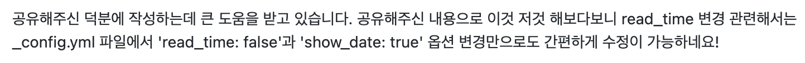

깃허브 블로그(Github Blog) minimal-mistakes 테마 게시글 날짜 출력하기
🎬 시작
- 네이버 블로그를 오래 했었는데 네이버 블로그는 게시글 제목 옆에 작성한 날짜를 보여준다. 그런데
GitHub으로 이사오고minimal-mistakes테마를 쓰다 보니… 왜 작성한 날짜 보기가 이렇게 어렵지? 외국인들은 날짜에 연연하지 않나… - 기본 설정은 게시글 제목 근처에 표시되지 않고 게시글 본문의 맨 아래로 내려야 작성 날짜를 볼 수 있다.
- 그래서 이걸 바꿀 것이다.
- GitHub Pages 기타 설정
- [jekyll] jekyll 블로그 포스팅 시간 출력하기
-
두 블로그 글들을 참고했는데 난 설정 페이지의 코드가 약간 달라서 같은 방법을 적용할 수 없었다. 같은 테마 파일을 다운 받았을텐데 난 왜 남들 다 있는 코드가 없었을까…
- 그래서 결정적으로는 https://github.com/devinlife/devinlife.github.io/commit/c6a8fe5a2f2a6f208b4ad90528074842e5c3ee66 이 커밋에 달린 댓글에 있는 방법으로 해결할 수 있었다.
수정 시도
- 위의 두 블로그처럼
_inclues/archive-single.html이랑_layouts/single.html을 수정해 봤는데 적용이 되지 않았다. 아마 남들은 다 있는 코드가 나에겐 없었던 이유가 저 분들처럼 만들어 줄 파일이 존재하지 않아서였던 것이 아닐까… 로컬 서버를 실행시켜서 미리보기로 봤을 때엔 잘 되고commit까지도 잘 됐는데push를 시도하니까 참고를 찾을 수 없다는 내용의 에러가 뜨면서 적용이 되지 않았다.

- 그러다 이 댓글을 보고
_config.yml을 수정해 봤는데 미리보기 상에서는 적용이 되지 않았다. - 그래서 처음엔 난 안 되는 줄 알고 계속
_inclues/archive-single.html과_layouts/single.html파일을 수정해보다가 마지막에 밑지는 느낌으로 해 봤는데push도 잘 되고 조금 기다리니까 블로그에 적용도 잘 되었다.
# Defaults
defaults:
# _posts
- scope:
path: ""
type: posts
values:
layout: single
author_profile: true
read_time: false # false로 변경
show_date: true # 원래 없어서 생성 후 true로 설정
comments: true
share: true
related: true

- 잘 나오네!